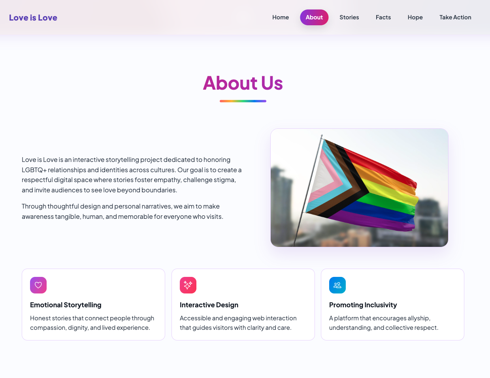
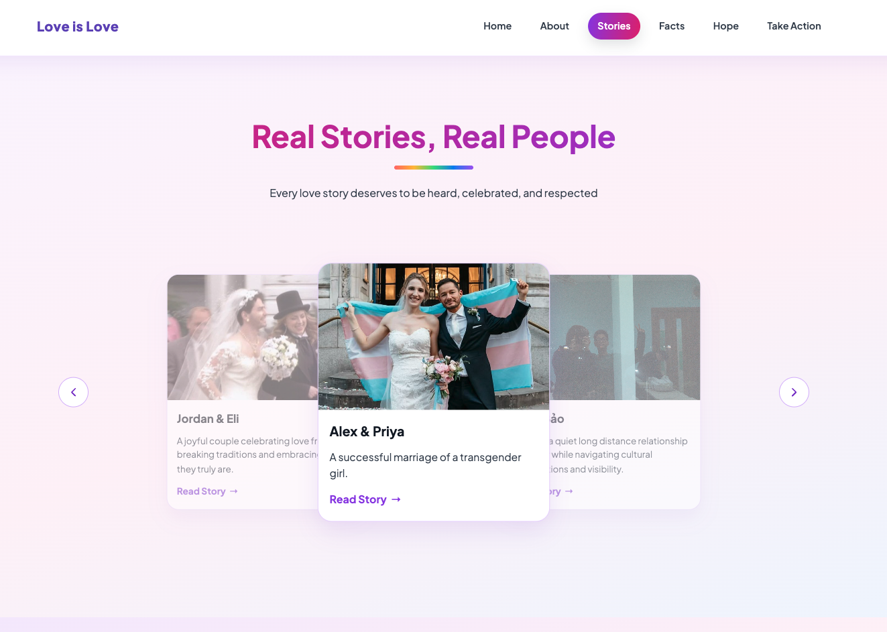
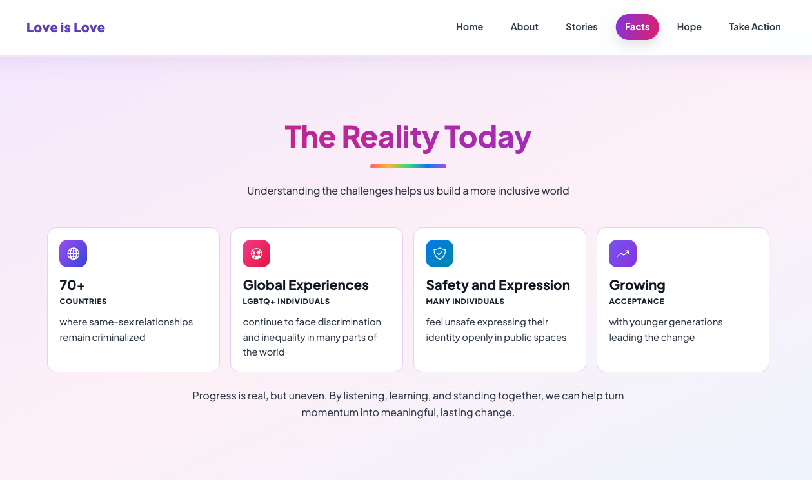
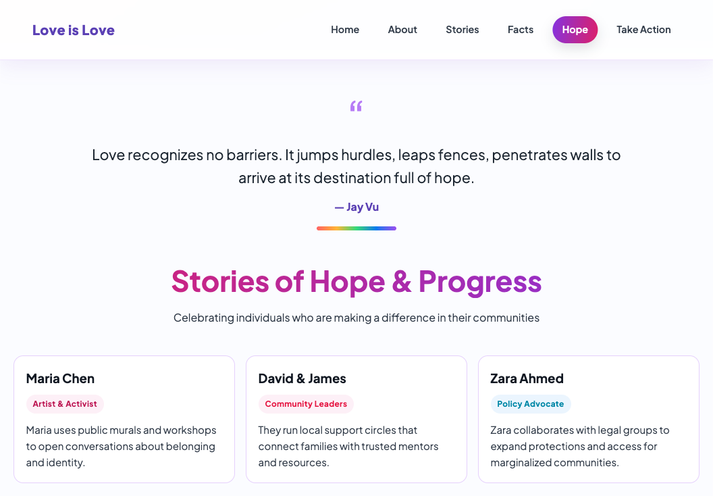
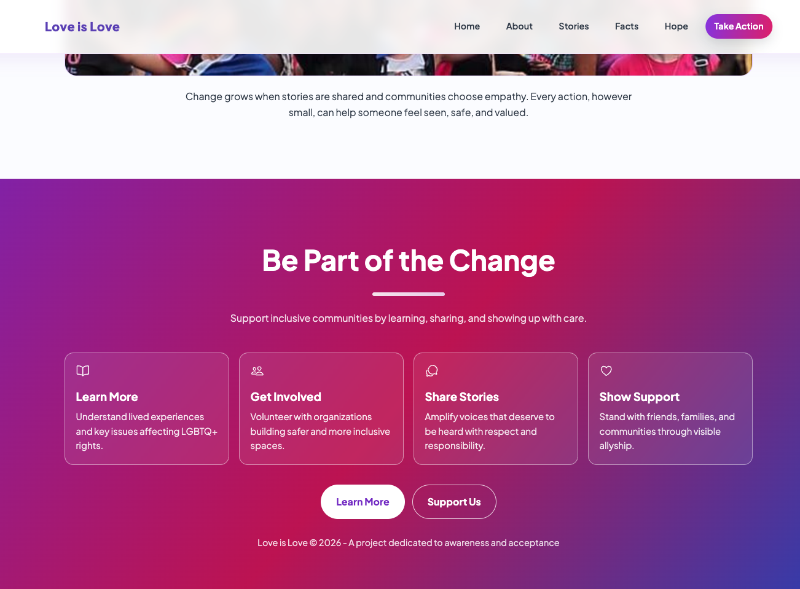

Love is Love is an interactive awareness website that uses storytelling, global facts, and calls to action to promote LGBTQ+ acceptance in regions where equality and recognition remain limited.
Love is Love is an interactive educational website created to raise awareness of LGBTQ+ rights and acceptance around the world. It combines storytelling, global facts, and calls to action to help users understand how LGBTQ+ people are treated differently across countries and cultures.
GOALS
The goal was to create an engaging digital experience that informs users about global LGBTQ+ acceptance, highlights regions where equality and legal protection remain limited, and encourages empathy, awareness, and support.
PROBLEM
Many people are not fully aware that LGBTQ+ relationships and identities are still criminalized, restricted, or socially rejected in parts of the world. This creates a need for clear, accessible, and emotionally engaging information.
CONCEPT
The website uses a story-driven structure to combine personal narratives, educational facts, hopeful examples, and actionable steps. The design aims to make a serious topic feel approachable without reducing its importance.
TARGET AUDIENCE
Young adults, students, allies, and general audiences who want to learn more about LGBTQ+ rights, representation, and global acceptance.
UX STRATEGY
The website guides users through a clear sequence: Home → About → Stories → Facts → Hope → Take Action. This moves users from introduction and emotional connection toward education, optimism, and action.
DEVELOPMENT
The project was built with semantic HTML, CSS, and JavaScript. Development focused on responsive layout, readable content structure, smooth section navigation, interactive storytelling, and consistent visual presentation.
FEATURES
Key features include a one-page interactive structure, story cards, educational facts, hope-focused content, calls to action, smooth navigation, and a responsive layout.
HTMLCSSJavaScript
FINAL OUTCOME





REFLECTION
This project improved my ability to combine front-end development with social impact communication. I learned to structure sensitive information clearly and use interaction design to support awareness, empathy, and meaningful action.
MORE WORKS IN
Packaging Vintage Jungle
Vintage Jungle is a fictional chocolate branding project that combines nostalgic jungle-inspired visuals with bold packaging, focusing on storytelling and strong shelf presence as its core values.
Aura Tint is a lipstick branding project centered on unconventional shades, encouraging individuality and self-expression through a visual identity that balances softness and confidence as its core brand values.


.png)
.png)